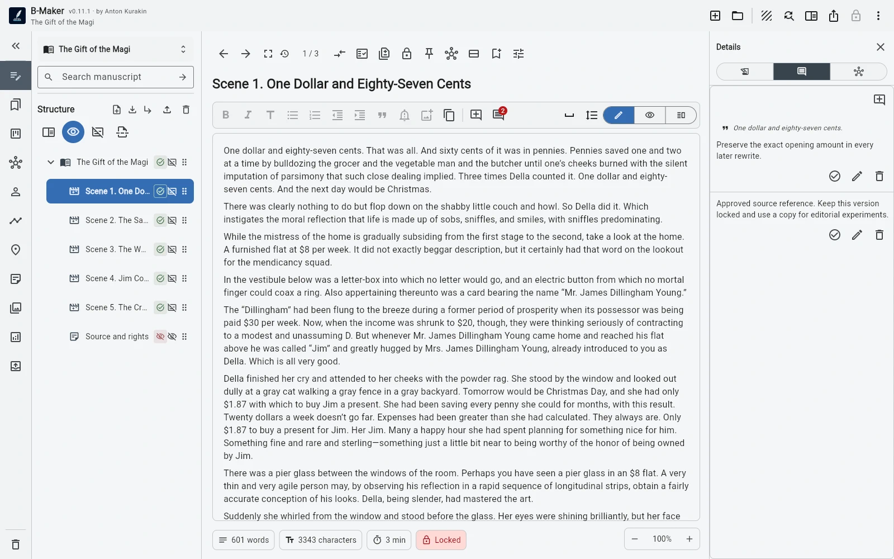

Обычная версия — редактируемая история. Заблокированная — контрольная точка, которую вы сознательно не хотите случайно изменить.
«Отправлено редактору» должно означать конкретный текст
Если отправить редакцию №4, а затем продолжить править её же, название уже перестаёт описывать то, что реально получил редактор. Lock сохраняет точное состояние, пока работа продолжается в следующей версии.
Опубликованный и утверждённый текст тоже стоит фиксировать
Публикация, конкурсная отправка, утверждённая глава или важный milestone могут стать состояниями, к которым нужно вернуться без реконструкции из памяти и backup.

Lock — не backup
Backup защищает проект от потери. Lock защищает смысл внутри проекта: именно эта редакция была отправлена, утверждена или опубликована.
Не нужно блокировать всё
Большинство версий должны оставаться рабочими. Блокируйте только те состояния, которые получили внешнее или историческое значение.
Зачем версии? · Version vs Backup · Зачем сравнивать версии?